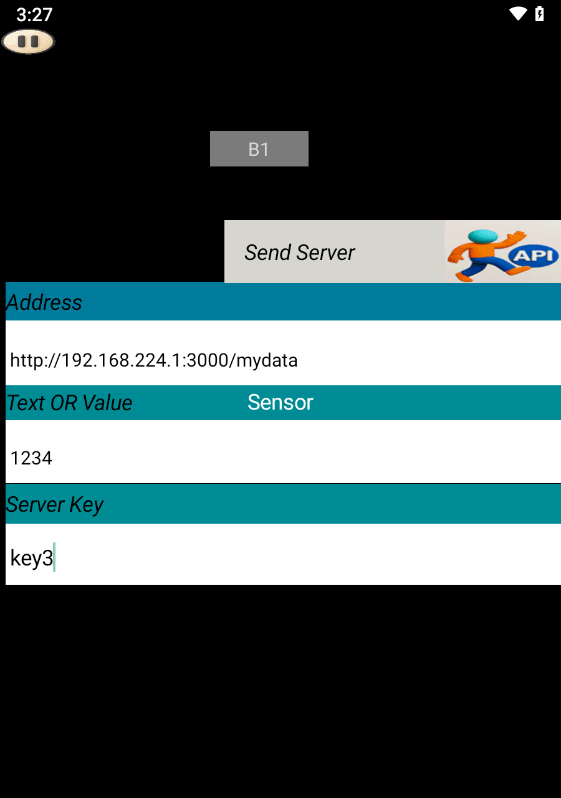
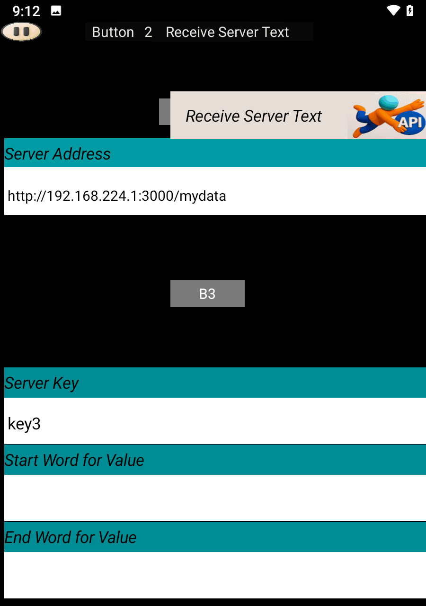
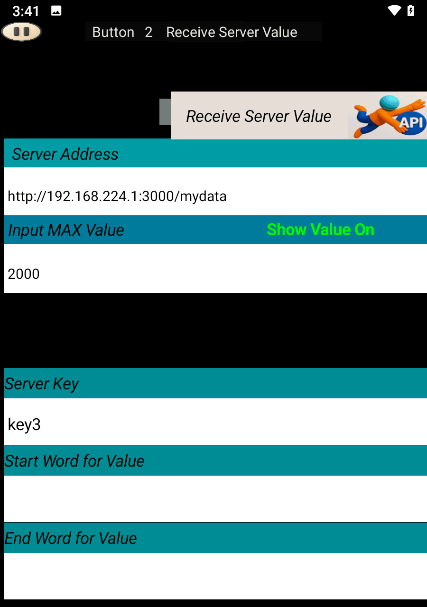

You can install it using the file provided in your folder:
📦 Download node-v22.17.1-x64Or download the latest version from the official website:
npm install again.server.jsnode_modules/ (all dependencies)Start server.bat (for easy launch)Download the following ZIP file and extract it:
📦 Download Local_ServerAfter extraction, click on Start server.bat to launch the Local server on your computer.
If successful, you will see a message like this:
{"level":30,"time":1761753122527,"pid":9856,"hostname":"ssm","msg":"Server listening at http://192.168.224.1:3000"}
Open SoifGo and create a button. Set its behavior to Send Server.
In play mode, clicking this button will send the value 1234 to the server.
You can verify the result by visiting the following address in your browser:
{"key3":"1234"}✅ Upload successful.

Create another button and set its behavior to Receive Server Text.
If your server response includes extra characters, you can use the Start Filter and End Filter fields to extract the desired part.
If no filtering is needed, leave those fields empty.

If you want to trigger visual effects based on received values, set the button behavior to Receive Server Value and specify the Maximum Value.
Once configured, effects will appear in the menu.
To learn more about applying effects to buttons, visit the following link:
🎨 Effects TutorialIf extracting an API key does not work due to malformed data, simply leave the key field empty to receive the entire dataset. Then, specify the word or phrase that comes before and after the desired value. The system will filter the data between those markers and display the extracted result.